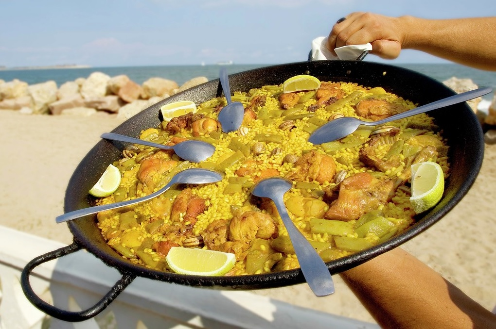

Uno de los arroces mas conocidos mundialmente es la paella aquí sus curiosidades
- 1. Los ingredientes canónicos son: arroz, carne de pollo y de conejo; judías de las variedades ferraúra, tabella y garrofó, caracoles ‘vaquetes’ en temporada y aceite. Además, tomate para el sofrito, pimentón dulce, sal, azafrán y agua. La globalización también amenaza el plato: sólo hay unos pocos productores nacionales de garrofó genuino. El que viene de fuera es más blanco y harinoso
- 2. La paella original llevaba rata de Albufera. Nada que ver con las urbanas del alcantarillado, claro. En realidad se parece más a una sabrosa liebre salvaje alimentada con arroz.
- 3. Hay tres variedades de arroz admitidas con denominación de origen: senia, bahía y bomba. Senia y bahía son arroces tradicionales, que absorben bien los sabores y quedan cremosos, perlados. El bomba tiene textura menos cremosa, absorbe casi tan bien los sabores y, aunque de inferior propiedad culinaria, tiene la ventaja de que no se pasa en la cocción. Es un poco el arroz para dummies.
Origen
El origen de la paella se remonta a los siglos XV y XVI en las zonas rurales arroceras de la Albufera de Valencia. Los campesinos y pastores necesitaban comida fácil de preparar, y que pudieran elaborar con los ingredientes que tenían a mano en el campo. Por lo que nació como un plato propio de las clases más humildes.

volver al inicio